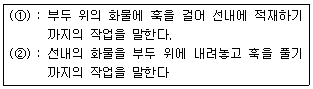

산업안전산업기사 (2005-03-06 기출문제)
1과목: 산업안전관리론
1. 의식이 명석하고 사물을 적극적으로 받아들이려고 하는 상태인 의식의 레벨(Phase)은?
- PhaseⅠ
- PhaseⅡ
- PhaseⅢ
- PhaseⅣ
(정답률: 62%)

2. 안전관리자가 안전교육의 효과를 높이기 위해서 안전퀴즈대회를 열어 정답자에게 상을 주었다면 이는 어떤 학습 원리를 학습자에게 적용한 것인가?
- Thorndike의 연습의 법칙
- Thorndike의 준비성의 법칙
- Pavlov의 강도의 원리
- Skinner의 강화의 원리
(정답률: 44%)
3. 재해발생의 구조와 재해원인 중 불안전 상태에 해당되지 않는 것은?
- 작업환경의 결함
- 보호조치의 결함
- 작업장소의 결함
- 보호구, 복장의 결함
(정답률: 52%)
4. 학생들의 개인차가 최대한으로 조절되어야 할 경우에 적합한 교육방법은?
- Programmed self-instructional method
- Discussion method
- Demonstration method
- Simulation method
(정답률: 45%)
5. 다음 중 보호구의 구비요건이 아닌 것은?
- 방호성능이 충분할 것
- 착용이 복잡할 것
- 재료의 품질이 양호할 것
- 겉모양과 보기가 좋을 것
(정답률: 68%)
6. 교육훈련 방법 중 사례연구법의 장점은?
- 학습의 속도가 빠르다.
- 의사 결정의 중요성을 알린다.
- 준비가 간단하고 어디서나 가능하다.
- 현실적인 문제의 학습이 가능하며 관찰, 분석력이 향상된다.
(정답률: 77%)
7. "파지"에 대한 설명으로 가장 올바른 것은?
- 사물의 인상을 마음속에 간직하는 것
- 획득된 행동이나 내용이 지속되는 것
- 사물의 보존된 인상을 다시 의식으로 떠오르는 것
- 과거의 경험이 어떤 형태로 미래의 행동에 영향을 주는 작용
(정답률: 35%)
8. 안전동기를 유발시킬 수 있는 방법과 거리가 먼 것은?
- 경쟁과 협동심을 유발시킨다.
- 안전목표를 명확히 설정한다.
- 상·벌을 준다.
- 동기유발의 최소수준을 유지토록 한다.
(정답률: 57%)
9. 안전표지의 종류 중 지시표지에 포함되지 않는 것은?
- 안전모 착용
- 안전화 착용
- 방호복 착용
- 방독마스크 착용
(정답률: 59%)
10. 평균 근로자 수가 1,000명 이상의 대규모 사업장에 가장 효율적인 안전조직은?
- 라인(line)형 안전조직
- 스태프(staff)형 안전조직
- 라인-스태프(line-staff) 혼합조직
- 생산부서장이 안전책임자 겸직조직
(정답률: 83%)
11. 인간 자신이 가진 잠재능력을 최고도로 발휘하고자 하는 욕구와 관계있는 것은?
- 자아실현의 욕구
- 존경의 욕구
- 사회적 욕구
- 안전의 욕구
(정답률: 84%)
12. S공장에서 500명의 종업원이 1년간 작업하는 가운데 신체장해 1급 1명, 9급 3명, 12급 5명이 발생하였다. 강도율은? (단, 손실일수 1급:7500일, 9급:1000일, 12급:200일)
- 0.684
- 0.958
- 6.84
- 9.58
(정답률: 29%)
13. 위험 예지 훈련 문제해결 4단계 중 문제점 발견 및 중요 문제를 결정하는 단계는 다음 중 어느 것인가?
- 대책수립 단계
- 현상파악 단계
- 본질추구 단계
- 행동목표설정 단계
(정답률: 33%)
14. 안전점검의 순서로 맞는 것은?
- 실태파악-결함의 발견-대책 결정-대책 실시
- 실태파악-결함의 발견-대책 실시-대책 결정
- 결함의 발견-실태파악-대책 결정-대책 실시
- 결함의 발견-실태파악-대책 실시-대책 결정
(정답률: 38%)
15. 단조로운 업무가 장시간 지속될 때 작업자의 감각기능 및 판단능력이 둔화 또는 마비되는 형상을 무엇이라 하는가?
- 감각차단현상
- 망각현상
- 피로현상
- 착각현상
(정답률: 64%)
16. 직접 작업을 하는 작업자 자신이 자기의 부주의 이외에 제반 오류의 원인을 생각함으로써 개선을 하도록 하는 과오 원인 제거로 옳은 것은?
- BS
- TBM
- ECR
- STOP
(정답률: 44%)
17. 다음의 부주의 발생현상 중 주의의 일점 집중현상과 관련성이 있는 것은?
- 의식의 과잉
- 의식의 우회
- 의식수준의 저하
- 의식의 상승작용
(정답률: 49%)
18. 도수율이 1.0 이라면 연천인율은 얼마인가?
- 1.0
- 2.4
- 3.4
- 4.4
(정답률: 55%)
19. 다음 중 산소가 결핍되어 있는 장소(8%이하)에서도 사용할 수 있는 마스크는 어느 것인가?
- 방독 마스크
- 방진 마스크
- 송기 마스크
- 방연 마스크
(정답률: 72%)
20. 질병에 의한 피로의 방지 대책은?
- 기계력을 사용한다.
- 작업의 가치를 부여한다.
- 보건상 유해한 작업상의 조건을 개선한다.
- 작업장에서의 부적절한 관계를 배제한다.
(정답률: 67%)
2과목: 인간공학 및 시스템안전공학
21. 인간공학 연구에서 실험실 연구와 현장 연구는 각각 장단점이 있다. 다음 설명 중 틀린 것은?
- 사실성은 현장 연구가 유리하다.
- 변수의 관리는 실험실 연구가 유리하다.
- 피실험자의 안전은 현장연구가 유리하다.
- 현장연구가 불가능할 경우에는 모의실험이 유리하다.
(정답률: 60%)
22. 다음 중 작업장에서 발생하는 소음에 대한 대책으로서 가장 적극적인 대책은?
- 소음원의 격리
- 소음원의 제거
- 귀마개, 귀덮개등 보호구의 착용
- 덮개 등 방호장치의 설치
(정답률: 70%)
23. 수치를 정확히 읽어야 할 경우에 적합한 시각적 표시 장치는?
- 동침형
- 동목형
- 수평형
- 계수형
(정답률: 80%)
24. 인간관계가 작업 및 작업 공간 설계에 못지 않게 생산성에 큰 영향을 끼친다는 것을 암시하는 것을 무엇이라 하는가?
- 인간욕구 5단계
- X, Y 이론
- 인적자원개발효과
- 호손효과
(정답률: 36%)
25. 균형잡힌 동전 2개를 던져서 나타나는 앞면의 수를 자극정보라 하자. 이 자극의 불확실성은 얼마인가?
- 0.5 bit
- 1.0 bit
- 1.5 bit
- 2.0 bit
(정답률: 27%)
26. 인간-기계 체계에서 인간과 기계가 만나는 면(面)을 무엇이라고 하는가?
- 계면
- 포락면
- 의사결정면
- 인체설계면
(정답률: 54%)
27. 정보 전달용 표시장치에서 청각적 표현이 좋은 경우가 아닌 것은?
- 메시지가 단순하다.
- 메시지가 복잡하다.
- 메시지가 그 때의 사건을 다룬다.
- 시각장치가 지나치게 많다.
(정답률: 70%)
28. 안전성의 관점에서 시스템을 분석 평가하는 접근방법과 거리가 먼 것은?
- "이런 일은 금지한다"의 상식과 사회기준에 따른 주관적인 방법
- "어떤 일은 하면 안된다"라는 점검표를 사용하는 직관적인 방법
- "어떤 일이 발생하였을 때 어떻게 처리하여야 안전한가"의 귀납적인 방법
- "어떻게 하면 무슨 일이 발생할 것인가"의 연역적인 방법
(정답률: 50%)
29. 시스템 안전프로그램에 있어 제일 첫번째 단계의 분석으로 시스템내의 위험요소가 어떤 상태에 있는가를 정성적으로 분석, 평가하는 것을 무엇이라 하는가?
- 결함수분석
- 예비위험분석
- 결함위험분석
- 고장형태와 영향분석
(정답률: 71%)
30. 반경 7cm의 조종구를 45°움직일 때 계기판의 표시가 3cm 이동하였다. 이 때의 C/R비는 얼마인가?
- 1.99
- 1.83
- 1.45
- 1.00
(정답률: 60%)
31. 시스템에 있어서 인간의 과오를 정량적으로 평가하는 방법은?
- THERP
- FMECA
- ETA
- FMEA
(정답률: 69%)
32. 시각 퍼포먼스는 일반적으로 진동수가 어느 범위에서 가장 나빠지는가?
- 1∼10Hz
- 10∼25Hz
- 20∼30Hz
- 50∼70Hz
(정답률: 48%)
33. 다음 중 인간의 중립적인 자세 (Neutral Position)와 거리가 먼 것은?
- 손목이 곧은(Straight) 상태
- 팔꿈치가 45도
- 어깨가 이완된 상태
- 시각은 수평에서 약간 아래
(정답률: 45%)
34. 인간-기계체계 설계시 인간공학적 해석방법이 아닌 것은?
- 링크해석법
- 웨이트식 중요빈도법
- 공간지수법
- 워크샘플링법
(정답률: 38%)
35. 결함수에서 입력현상이 발생하여 일정시간이 지속된 후 출력이 발생하는 기호는?
- 전이 기호
- 위험지속 기호
- 시간단축 기호
- 작업변경 기호
(정답률: 60%)
36. 다음 중 직렬계(直列系)의 특성이 아닌 것은?
- 요소(要素)중 어느 하나가 고장이면 계(系)는 고장이다.
- 요소의 수가 적을수록 신뢰도는 높아진다.
- 요소의 수가 많을수록 수명이 짧아진다.
- 계의 수명은 요소 중에서 수명이 가장 긴 것으로 정하여 진다.
(정답률: 66%)
37. 연속 조절 통제기기가 아닌 것은?
- 토글(Toggle)스위치
- 노브(Knob)
- 페달(Pedal)
- 핸들(Handle)
(정답률: 56%)
38. 다음 중 정보의 청각적제시(聽覺的提示)가 적당한 경우는?
- 작동자가 여러곳으로 움직여야 할 때
- 정보가 복잡하고 길 때
- 정보가 공간적인 위치를 다룰 때
- 주위환경이 소란할 때
(정답률: 61%)
39. 위험성 평가에서 위험수위가 가장 높은 것은?(오류 신고가 접수된 문제입니다. 반드시 정답과 해설을 확인하시기 바랍니다.)
- catastrophic-remote
- critical-probable
- marginal-occasional
- negligible-frequent
(정답률: 52%)
40. 음압수준이 10dB 증가하면 음압은 몇배가 되는가?
- √10배
- 10배
- √5배
- 5배
(정답률: 54%)
3과목: 기계위험방지기술
41. 나사의 풀림을 방지하기 위하여 사용하는 것 중 해당되지 않는 것은?
- 코터
- 분할핀
- 록너트
- 스프링와셔
(정답률: 46%)
42. 로울러의 맞물림점의 전방 60mm의 거리에 가드를 설치 하고자 한다. 가드의 개구부 설치 간격(mm)은? (단, ILO 기준에 의해 계산할 것)
- 12
- 15
- 18
- 20
(정답률: 58%)
43. 선반에서 칩브레이커(chip breaker)는 어느 목적으로 이용되는 것인가?
- 취성금속을 밀링가공할 때 커터 윗면에 파서 칩을 유도하기 위한 홈
- 강을 선삭할 때 바이트 윗면에 연속칩을 자르기 위하여 만든 홈
- 주철을 절삭하는 세이퍼 윗면에 붙여 칩을 짧게 끊기위한 것
- 공구 윗면의 마멸을 감소시키고 공구의 수명을 길게하기 위한 장치
(정답률: 37%)
44. 사업주는 프레스 등의 금형의 부착, 해체, 조정 작업 중 슬라이드가 불시에 하강함으로써 발생하는 근로자의 위험을 방지하기 위하여 설치해야 하는 것은?
- 안전블록
- 방호울
- 시건장치
- 게이트가드
(정답률: 73%)
45. 포크리프트(fork lift:지게차)의 운반작업 도중 가장 많이 발생하는 재해는?
- 화물의 낙하
- 포크리프트의 전도
- 추락
- 접촉사고
(정답률: 37%)
46. 두께 10mm인 인장강도 60kg/mm2의 연강판으로 10kg/cm2의 내압을 받는 원통형 압력용기를 제작할 때 안전율을 5로 하면 내경을 얼마로 하여야 하는가? (단, 원주방향의 응력을 기준으로 한다. )
- 2000mm
- 2400mm
- 2800mm
- 3000mm
(정답률: 37%)
47. 인더스트리얼 디자인(Industrial Design)과 가장 밀접한 관계가 있는 기계의 안전조건에 해당되는 것은?
- 기능적 안전화
- 외관적 안전화
- 구조적 안전화
- 작업점의 안전화
(정답률: 44%)
48. 기계설비의 안전화 추진 가운데 인간공학 활용 측면으로 검토되어야 할 사항은?
- 보수성
- 작업성
- 낮은 비용
- 인간과 기계와의 융합
(정답률: 62%)
49. 다음 중 유체의 누출방지에 사용되는 것은?
- 밸브
- 가스켓
- 플랜지
- 파열단
(정답률: 46%)
50. 안전율을 구하는 계산공식이 적당하지 않은 것은?
- 극한강도/허용응력
- 극한강도/정격하중
- 파괴하중/정격하중
- 사용하중/정격하중
(정답률: 43%)
51. 보일러의 압력방출장치가 2개 있을 때 작동되는 압력은 각각 언제인가?
- 상용압력 이하, 최고사용압력 이하
- 최고사용압력 이하, 최고사용압력의 1. ⑤배 이하
- 최고사용압력 이하, 최고사용압력의 1. 3 배 이하
- 최고사용압력의 1. 03배 이하, 최고사용압력의 1. 3배 이하
(정답률: 71%)
52. 고속절단기의 연삭작업에서 덮개의 노출각도에 적합한 것은?
- 135°이내
- 140°이내
- 145°이내
- 150°이내
(정답률: 48%)
53. 프레스의 광전자식 안전장치의 단점이 아닌 것은?
- 연속운전작업에 사용할 수 없다.
- 확동클러치 방식에는 사용할 수 없다.
- 설치가 어렵고 기계적 고장에 의한 2차 낙하에는 효과가 없다
- 작업중의 진동에 의해 투·수광기가 어긋나 작동이 안될 수 있다.
(정답률: 37%)
54. 연삭숫돌의 지름이 30㎝이고 회전수가 500rpm일때의 원주 속도[m/분]는? (단, π는 3. 14임. )
- 471
- 489
- 495
- 498
(정답률: 62%)
55. 인장시험에서 응력을 구하는 공식은? (단, Ao:시험편의 최초의 단면적, Lo:표점거리, P:외력)
- =P/Ao
- =Ao/P
- =P/(Ao-Lo)
- =P/Lo
(정답률: 38%)
56. 유압식 승강기에서 유압파워 유닛, U탱크, 냉각장치 및 제어반은 기둥 및 벽에서 얼마 이상 떨어져야 하는가?
- 30㎝
- 40㎝
- 50㎝
- 60㎝
(정답률: 24%)
57. 크레인(crane)의 방호장치중 권과방지장치에 사용되는 것은?
- 완충장치
- 리미트스위치
- 브레이크장치
- 비상스위치
(정답률: 54%)
58. 드릴작업의 안전대책과 거리가 먼 것은?
- 칩은 날카롭기 때문에 와이어브러쉬로 제거한다.
- 구멍 끝 작업에서는 절삭압력을 주어서는 안된다.
- 칩에 의한 자상을 방지하기 위해 목장갑을 착용한다.
- 고정구를 사용하여 작업중 공작물의 유동을 방지한다
(정답률: 72%)
59. 보일러수에 유지류 고형물 등에 의해 거품이 생겨 수위를 잘 판단하지 못하는 현상은?
- 플라밍(Priming)
- 캐리오버(Carry over)
- 포오밍(Forming)
- 기수
(정답률: 72%)
60. 목재 가공용 둥근톱의 두께가 3[㎜]일때 분할날의 두께는 톱날두께의 얼마 이상으로 하는가?
- 3.6[㎜]
- 3.3[㎜]
- 4.5[㎜]
- 4.8[㎜]
(정답률: 61%)
4과목: 전기 및 화학설비위험방지기술
61. 관내를 액체가 이동할 때에 정전기가 발생하는 현상은?
- 마찰대전
- 박리대전
- 분출대전
- 유동대전
(정답률: 72%)
62. 유기용제를 넣어둔 용제탱크를 세척하기 위해 작업자가 탱크상부로 부터 사다리를 타고 탱크내부로 들어갔다. 한참이 지나도 작업자가 나오지 않아 탱크속을 들여다 보니 작업자가 탱크바닥에 쓰러져 숨져 있었다. 다음 중 사고의 근원적인 원인으로 추정되는 것은?
- 화기의 소지
- 퍼지작업의 불충분
- 구조장비의 미비치
- 가스검출기의 미소지
(정답률: 35%)
63. 화재예방 대책 중 화기 관리는 어디에 해당되는가?
- 비상대책
- 국한대책
- 예방대책
- 소화대책
(정답률: 29%)
64. 위험물질의 위험분석에 필요한 주요 물리적 화학적 특성만을 열거한 것은?
- 연소, 부식, 반응 및 폭발특성
- 광도, 중량, 어는점 특성
- 분산성, 저항도, 연성
- 내약품성, 전성, 연소성
(정답률: 68%)
65. 전기누전화재경보 경계전로에 그 정격전류의 130(%)의 전류를 몇 분간 통하는 시험을 한 경우 오동작을 하지 않아야 하는가?
- 10
- 20
- 30
- 40
(정답률: 25%)
66. 분진 폭발의 영향인자에 대한 설명 중 틀린 것은?
- 분진의 입경이 작을수록 폭발하기가 쉽다.
- 일반적으로 부유 분진이 퇴적분진에 비하여 발화 온도가 낮다.
- 연소열이 큰 분진일수록 저농도에서 폭발하고 폭발 위력도 크다.
- 분진의 비표면적이 클수록 폭발성이 높아진다.
(정답률: 34%)
67. 도시가스를 사용하는 도중 부주의로 중간밸브를 잠그지 않아 가스가 0.5 (m3/min )의 속도로 거실에 유입되고 있다. 거실의 크기는 100m3 이다. 거실은 최소 몇 분 후에 가스폭발을 일으킬 수 있는 농도에 이르게 되는가? (단, 유입된 가스는 거실내에 골고루 혼합되며 가스가 유입된 만큼 공기는 외부로 빠져 나가는 것으로 가정한다. 도시가스의 폭발하한계는 5% 이다. )
- 5분
- 10분
- 15분
- 20분
(정답률: 40%)
68. 다음 중 소염에 관한 설명이 잘못된 것은?
- 세극의 집합체를 소염소자라 한다.
- 연소속도는 화염면에 수직한 성분이다.
- 연소속도와 소염경의 사이에는 비례관계에 있다.
- 일반적인 소염소자는 금망이며 강도상의 결점을 보완한 소결금망이 있다.
(정답률: 36%)
69. 다음의 고압가스 중 위험도가 가장 큰 것은?
- 프로판
- 아세틸렌
- 암모니아
- 수소
(정답률: 61%)
70. 인체의 전격시의 통전시간이 4[초]이었다고 했을 때의 심실 세동전류의 크기는 대략 얼마인가?
- 40[mA]
- 80[mA]
- 1⑤[mA]
- 165[mA]
(정답률: 43%)
71. 가열·마찰·충격 또는 다른 화학물질과의 접촉 등으로 인하여 산소나 산화제의 공급이 없더라도 폭발등 격렬한 반응을 일으킬 수 있는 물질은 어느 것인가?
- 알코올류
- 무기산화물
- 유기과산화물
- 과망간산칼륨
(정답률: 50%)
72. 감전에 의한 사망의 위험성을 결정하는 요인은?
- 통전시간
- 통전경로
- 전원의 종류
- 통전전류의 크기
(정답률: 56%)
73. 다음 관 부속품 중 그 용도가 다른 것은?
- 플랜지
- 유니온
- 카플링
- 부싱
(정답률: 43%)
74. 수전단 전압이 3300[V]이고, 전압강하율이 7%인 송전선의 송전단 전압[V]은?
- 3631
- 3531
- 3461
- 3561
(정답률: 59%)
75. 다음 위험물중 산화성 물질과 거리가 먼 것은?
- 염소산칼륨
- 질산나트륨
- 탄화칼슘
- 과산화바륨
(정답률: 45%)
76. 전기설비 내부에서 발생한 폭발이 설비 주변에 존재하는 가연성 물질로 파급되지 않도록 실질적으로 격리하는 방법을 응용한 방폭구조는?
- 안전증방폭구조
- 압력방폭구조
- 유입방폭구조
- 내압방폭구조
(정답률: 43%)
77. 정전기로 인한 화재발생 원인에 대한 설명 중 잘못된 것은?
- 대전되기 쉬운 금속물체를 접지했을때
- 가연성가스가 폭발범위내에 있을때
- 방전하기 쉬운 전위차가 있을때
- 정전기의 방전에너지가 가연성물질의 최소착화 에너지 보다 클때
(정답률: 46%)
78. 광산의 갱도(坑道), 황분사기, 식품사료공장 등에서 산화 반응열에 의해 발생하는 폭발형태는?
- 분해폭발
- 혼합가스폭발
- 분진폭발
- 증기폭발
(정답률: 57%)
79. 방폭구조 전기기계·기구가 아닌 것은?
- 내압방폭구조
- 안전증방폭구조
- 유입방폭구조
- 수입방폭구조
(정답률: 65%)
80. 우리나라의 인화성이나 가연성 가스에 의한 방폭지역에 대한 위험 장소의 분류에 해당되지 않는 것은?
- 0종 장소
- 1종 장소
- 2종 장소
- 3종 장소
(정답률: 67%)
5과목: 건설안전기술
81. 건설현장에서 사용되는 건설장비는 자격을 가진 자가 정기적으로 자체검사를 실시해야 한다. 다음 중 틀린 것은?
- 크레인, 이동식크레인, 데릭은 6개월에 1회 이상
- 승강기는 3개월에 1회 이상
- 리프트는 3개월에 1회 이상
- 곤도라는 6개월에 1회 이상
(정답률: 23%)
82. 토사붕괴의 외적원인이 아닌 것은?
- 토석의 강도 저하
- 절토 및 성토 높이의 증가
- 사면법면외의 경사 및 기울기 증가
- 지표수 및 지하수의 침투에 의한 토사 중량 증가
(정답률: 59%)
83. 비계로부터의 추락 원인과 관계가 먼 것은?
- 작업발판의 폭이 좁았다.
- 덮개가 없었다.
- 비계 위로 올라 갔다.
- 난간이 없었다.
(정답률: 44%)
84. 다음 중 동상방지 대책으로 틀린 것은?
- 동결되지 않는 흙으로 치환하는 방법
- 흙속의 단열재료를 매입하는 방법
- 지표의 흙을 화학약품으로 처리하는 방법
- 세립토층을 설치하여 모관수의 상승을 촉진시키는 방법
(정답률: 60%)
85. 다음 중 인력운반 작업시 안전수칙으로 옳은 것은?
- 길이가 긴 물건은 뒷쪽을 높게 하여 운반한다.
- 등을 편 상태에서 물건을 들어올린다.
- 물건은 가능한 몸에서 멀리 떼어서 들어올린다.
- 무거운 물건일수록 보조기구는 피하는 것이 좋다.
(정답률: 63%)
86. 거푸집 작업시 안전담당자의 직무와 거리가 먼 것은?
- 전반적인 작업공정과 공기를 결정하고 지시하는 일
- 안전한 작업방법을 결정하고 작업을 지휘하는 일
- 재료, 기구의 유무를 점검하고 불량품을 제거하는 일
- 작업 중 안전대 및 안전모 등 보호구 착용상태를 감시하는 일
(정답률: 41%)
87. 사업주는 계단 및 계단참을 설치할 때에는 매 m2당 몇 kg 이상의 하중에 견딜수 있는 강도를 가진 구조로 설치하여야 하는가?
- 200kg
- 300kg
- 400kg
- 500kg
(정답률: 47%)
88. "철골공사와 관련하여 근로자가 수직방향으로 이동하는 철골부재에는 답단 간격이 ( )센티미터 이내인 고정된 승강로를 설치하여야 하며, 수평방향 철골과 수직방향 철골이 연결되는 부분에는 연결작업을 위하여 작업발판 등을 설치 하여야 한다." 다음 ( )에 알맞은 수는?
- 10
- 20
- 30
- 40
(정답률: 30%)
89. 다음 중 달비계 각 구성부분의 안전계수로 틀린 것은? (단, 곤도라의 달비계는 제외함)
- 달기와이어로우프 및 달기강선의 안전계수 → 10 이상
- 달기체인 및 달기후크의 안전계수 → 5 이상
- 달기강대와 달비계 하부 및 상부지점의 강재 안전계수 → 2. 5 이상
- 달기강대와 달비계 하부 및 상부지점의 목재 안전계수 → 3 이상
(정답률: 41%)
90. 추락사고를 예방하기 위한 방지대책으로 옳지 않은 것은?
- 안전담당자를 지정하여 지도·감독
- 안전대 착용 및 추락방지망 설치
- 작업대나 비계에 작업발판과 난간대 설치
- 높이 1미터 이상인 장소에서의 작업 금지
(정답률: 75%)
91. 다음 설명에 적합한 용어는?

- ① 양하, ② 적하
- ① 적하, ② 양하
- ① 상차, ② 하차
- ① 하차, ② 상차
(정답률: 37%)
92. 불도저(bulldozer)의 종류로 블레이드면이 진행방향의 중심선에 대하여 20 ∼ 30°경사져 흙을 측면으로 보낼 수 있는 것은?
- 크롤러 도저
- 앵글 도저
- 레이크 도저
- 스트레이트 도저
(정답률: 66%)
93. "이동식비계의 바퀴에는 뜻밖의 갑작스러운 이동을 방지하기 위하여 (①), (②) 등으로 바퀴를 고정시키고 비계의 일부를 견고한 시설물에 잡아매는 등의 조치를 할 것" 이와 같이 이동식비계 조립시 준수하여야 할 사항으로 ( ) 에 알맞은 것으로 짝지어진 것은?
- ① 브레이크 ② 쐐기
- ① 콘크리트 타설 ② 교차가새
- ① 교차가새 ② 안전난간
- ① 안전난간 ② 쐐기
(정답률: 62%)
94. 다음 중 지반의 굴착전 사전조사 사항에 해당되는 것은?
- 흙막이 지보공의 설치 유무
- 소화설비의 유무
- 지반의 지하수위 상태
- 유도자의 배치 유무
(정답률: 56%)
95. 콘크리트 배합시 품질에 직접 영향을 주지 않는 요소는?
- 철근의 품질
- 골재의 입도
- 물-시멘트비
- 시멘트 강도
(정답률: 54%)
96. 가설구조물 부재의 강성이 부족하여 가늘고 긴 부재가 압축력에 의하여 파괴되는 현상은?
- 좌굴
- 탄성변형
- 한계변형
- 휨변형
(정답률: 54%)
97. 일반건설공사(갑)에서 재료비가 30억, 직접노무비가 50억일 때 예정가격상의 안전관리비는? (단, 일반건설공사(갑)의 안전관리비 계상기준 = 1.88%)
- 56,400,000원
- 94,000,000원
- 150,400,000원
- 153,400,000원
(정답률: 49%)
98. 건설장비 크레인의 헤지(Hedge)장치란?
- 중량초과시 부져(Buzzer)가 울리는 장치이다.
- 와이어 로우프의 후크이탈 방지장치이다.
- 일정거리 이상을 권상하지 못하도록 제한시키는 장치이다.
- 크레인 자체에 이상이 있을 때 운전자에게 알려주는 신호 장치이다.
(정답률: 52%)
99. 다음 중 유해·위험 방지계획서 제출 대상 공사는?
- 지상높이가 21m인 건축물 건설공사
- 최대지간 길이가 40m인 교량 건설공사
- 제방높이가 10m인 댐 건설공사
- 깊이가 12m인 굴착공사
(정답률: 56%)
100. 다음 중 토사붕괴재해의 예방대책으로 옳지 않은 것은?
- 사다리 설치
- 안전한 굴착 경사 유지
- 흙막이 지보공 설치
- 순찰강화 및 안전점검 실시
(정답률: 72%)